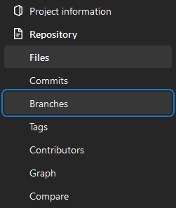

Working with Branches
TLDR
- This is a beginner friendly guide on how to work and collaborate with Git for the first time.
- Working with branches is a core part of working with Git, allowing quick and safe collaboration with others (and yourself!)
- Knowing how to create, switch, delete, and merge branches are a vital skills and can be done both locally via Git and remotely via GitHub and GitLab.
- Sometimes conflicts between branches occurs and Git will need your input to solve these conflicts. However, Git makes them very easy to resolve, even if they look scary initially!
Pre-requisites
| Pre-requisite | Importance | Note |
|---|---|---|
| Intro to Git | Necessary | This guide assumes you are using Git to version control |
| Using Git collaboratively | Necessary | It is important to be familiar with the concepts covered in this guide |
| Committing Work Walkthrough | Recommended | Make sure you are confident with using the basic commands of Git first |
Check your current branch
When performing some operations, it is useful to know your current branch. You can quickly confirm your current branch with the following command:
git status will also print the current branch at the top of the return message, as well as other useful information. Use it frequently.
Creating a Branch
Are you in the correct repository?
Before you start, ensure that you are in the correct directory containing the local version of your repository:
To create a new branch, use the command:
This command will both create and switch your repository to your new branch, based on the current branch.
Create a branch from a different branch
If you want your new branch to be based off a different branch than the one you are currently on, simply specify the name of that base branch:
Publishing the new branch
The branch you have created only exists on your local version of the repository and will need to be published on to the remote version of your repository:
To create a branch in GitHub, make sure you are on the Code screen of your repository, this is the default page you see when you navigate to your repository. Follows these steps:
-
Click on the branches button, highlighted in blue below and showing the number of branches we currently have (which is currently 3).
-
This will bring up the branches page. Click on the green
New Branchbutton to the right. -
This will bring up the
Create a branchpopup. Enter a suitable name for your branch and select the branch source. The branch source is the version of the code that your new branch will be based on and diverging from, and is by default main, which should be a stable working version of your code. -
Click the green
Create branchbutton when you are ready. -
Once created, you will be returned to the
Codescreen of the repository with the new branch checked out and ready to be viewed and worked on.
Alternatively to the process above, you can click on the branches drop down menu and enter your new branch's name. If that branch doesn't already exist then an option to create a new branch will appear.
The base branch will be set to the branch you are currently on and creating the new branch from. Change branches before you create the new branch if you want it to be different.
Accessing your new remote branch on a local repository
To access your new remote branch on your local repository, simply follow the instruction for Changing Branches in the Terminal.
To create a new branch in GitLab:
-
First navigate to the branches page by going to the side-menu on the left, then
RepositorythenBranches.
-
Select the
New Branchbutton on the left in blue -
Enter your new branch's name in the
Branch namefield and from theCreate frommenu, select the source branch, which your new branch will be based upon. -
When ready, click the blue
Create branchbutton.
Changing Branch
To change to a new branch:
git checkout vs git switch
git switch is a recent addition to Git and the older git checkout can also switch branches:
The addition of git switch is because git checkout has dual purposes, switching branches or restoring working tree files. This dual function can be a source of confusion for some users. The second function is not included in git switch but instead git restore.
If you have already learnt to use git checkout to switch branches then that will continue to work, but if you are just learning git then it is better to use the more predicable git switch command.
To switch branches in GitHub:
- Click on the branches drop down menu in the
Codeview of your repository. This is the button in the top left of the screen and will show the name of currently checked out branch. By default this will bemain. - Type in the name of your branch to find it or select it from the list.
Alternatively, you can navigate to the "Branches" page of your repository and select the branch from there. To get to the "Branches" page, click on the button next to the branches drop down menu.
Once you have switched branches, you will be returned to the Code view, which will show the code from the branch you have now checked out with its name shown in the branch drop down menu.
To switch branches in GitLab:
- Click on the branches drop down menu in the
Filesview of your repository. This is the button in the top left of the screen and will show the name of currently checked out branch. By default this will bemainormaster. -
Type in the name of your branch to find it or select it from the list.
-
Once you have switched branches, you will be returned to the
Filesview, which will show the code from the branch you have now checked out with its name shown in the branch drop down menu.
Help, I can't see the branch I have created locally on my remote repository (GitHub/GitLab)?
If you have created a new branch on a local clone of the repository but cannot see it on GitHub, then you might not have pushed it and set your local branch to track the upstream one.
You can quickly check a local branch's branch tracking info with git status --short --branch or git status -sb:
git status -sb
## branch-name...origin/branch-name
If the branch does not have a remote branch set then only the first part will show.
To set the upstream, push with the --set-upstream (-u) flag:
Deleting a Branch
Deleting a branch is a two step process. Just like how when creating a branch you create it both locally and on the repote repo, when deleting you have to delete the branch locally and also delete the remote branch.
-
To delete the branch locally
-
To delete the branch remotely:
You can also use the shorter command to delete remotely:
Error when deleting a remote branch
If you get the error below, it may mean that someone else has already deleted the branch.
error: unable to push to unqualified destination: remoteBranchName The destination refspec neither matches an existing ref on the remote nor begins with refs/, and we are unable to guess a prefix based on the source ref. error: failed to push some refs to 'git@repository_name'
Try to synchronize your branch list using:
The -p flag means "prune". After fetching, branches which no longer exist on the remote will be deleted.
To delete a branch on GitHub:
-
Click on the branches button, highlighted in blue below and showing the number of branches we currently have (which is currently 4).
-
This will bring up the branches page. Find the branch you wish to delete and click on the bin icon to the far right of it.
-
This will instantly delete the branch. It will show as deleted on the branch page, however, it can be easily recovered with the
Restorebutton on the far right. This is useful when you mistakenly delete a branch.
To delete a branch on GitLab:
-
First navigate to the branches page by going to the side-menu on the left, then
RepositorythenBranches.
-
Search for the branch you wish to delete. When found, click the
Deletebin icon to the right of the screen. -
Clicking the bin icon will bring up a warning about deleting the branch. Read the warning to confirm you have got the correct branch and then click the red
Yes, delete branchbutton. -
This will delete the branch. The branches page of the repository will be shown with a delete confirmation banner. When searching for the deleted branch, no branch will be found.
Merging Branches
Remember to ensure local branches are up to date with their remote version
Or if you don't mind which branches are updated:
While all using the same git merge commands, there are a number of different merges that you might want to carry out:
When merging, if Git detects a conflict, it will stop the merge and raise and error that would look like the following:
Auto-merging practice/temperatures_function.py
CONFLICT (content): Merge Conflict in practice/temperatures_function.py
Automatic merge failed; fix conflicts and then commit the result.
If this occurs, then continue on to look at our walkthrough on resolving merge conflicts
Merging on GitHub is done through pull requests, see our walkthrough for more instructions.
Merging on GitLab is done through merge requests, see our walkthrough for more instructions.
Resolving Merge Conflicts
When merging, if Git detects a conflict, it will stop the merge and raise an error that would look like the following:
Auto-merging practice/temperatures_function.py
CONFLICT (content): Merge Conflict in practice/temperatures_function.py
Automatic merge failed; fix conflicts and then commit the result.
To resolve this error, we are going to find out where the merge conflicts are happening, make a choice of which version of changes to keep (which can be both), before staging the file and completing the merge with a commit (which we can then push).
-
To find the offending file, we look at the second line of the conflict error where it is listed:
practice/temperatures_function.py. -
Open the file(s) in an editor of your choosing and look for the conflicting section of the document:
-
Delete the content that you do not wish to keep, including the arrows and double lines.
-
Search for any remaining conflicts in this file and other files.
-
Once you have found and corrected all of them, save your changes and update your branch in the usual way:
git status # (1)! git add . git status git commit -m "Merge branch 'source-branch-name' into 'target-branch-name'" # (2)! git status git push- The
git statuscommands are not required, but is good practice to keep track of the current state of the repository to understand what you have done. - This is an example of a good merge commit message, but you can use whatever message you want
- The
When you create a Pull Request in GitHub it will check the compatibility of the two branches (base and source) and detect if there are any merge conflicts that are expected to occur.
If it does find conflicts, it will not allow the merge to proceed until they are resolved. To resolve the conflicts:
-
First, click on the
Resolve conflictsbutton on the right of the "This branch has conflicts that must be resolved" message box. -
This will bring up the conflict resolution page. Select a file with a conflict in it and find the conflicting section:
-
Delete the content that you do not wish to keep, including the arrows and double lines. Navigate to the next conflict with the
Next vbotton. Once all conflicts in a file are resolved then theMark as resolvedbutton will become available. Click the button. -
A green checkmark will appear next to the file you have resolved. Resolve all other files and a green
Commit mergebutton will appear at the top of the Merge Editor space. Commit the merge. -
Once the merge has been completed, the merge health section of the PR will show as green and healthy (assuming there are not any more review steps to go through)
.
When you create a Merge Request in GitLab it will check the compatibility of the two branches (base and source) and detect if there are any merge conflicts that are expected to occur.
If it does find conflicts, it will not allow the merge to proceed until they are resolved. To resolve the conflicts:
-
First click on the blue
Resolve Conflictsbutton to the right of the "Merge blocked: merge conflicts must be resolved" message. -
This will open up the Merge Conflicts editor which has two different mode, Interactive or Edit Inline. Select the option that best works for you.
-
For each conflict, the changes from each branch will be shown in green for "ours" or the source branch and blue for "theirs" or the target branch over the overall merge. To the right there are buttons to select which version to use. Select the appropriate version.

-
Once all conflicts are resolved, the blue
Commit to source branchwill become available. Make any changes you wish to the commit message and commit the merge.
-
Each conflict will be marked something like this:
-
Delete the content that you do not wish to keep, including the arrows and double lines.
-
Once all conflicts are resolved, the blue
Commit to source branchwill become available. Make any changes you wish to the commit message and commit the merge.
Once the merge conflicts have been resolved and committed, you will return to the merge request. A banner at the top will confirm all conflicts have been resolved and the previous "Merge blocked: merge conflicts must be resolved" message box will now show "Ready to merge!".
External Links Disclaimer
NHS England makes every effort to ensure that external links are accurate, up to date and relevant, however we cannot take responsibility for pages maintained by external providers.
NHS England is not affiliated with any of the websites or companies in the links to external websites.
If you come across any external links that do not work, we would be grateful if you could report them by raising an issue on our RAP Community of Practice GitHub.